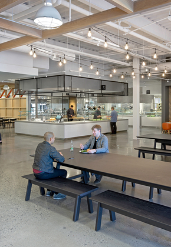

Company Facilities means FortisBC’s facilities, including pipes, buildings, structures,
valves, signage, storage facilities, machinery, vehicles and other equipment used to
maintain, operate, renew, repair, construct and monitor a natural Gas Distribution and
transmission system.
World Class Library
Company libraries are the norm in law, medical and other practices but even if not
a standard yet in some other fields, more and more companies are embracing libraries
as it is a practical budget-conscious approach to shared knowledge and resource management.
Libraries can house technical books, editorial reference guides, material samples, or
can simply be personal development, wellness and well-being related.
Fitness Center
If you're noticing a decline in productivity in the workplace, high rates of absenteeism,
and low employee morale, it may be time to rejuvenate your company by building an onsite
fitness center.
Employees who have access to a workplace fitness center can keep up with their healthy lifestyle
without having to invest in a gym membership or compromise their busy schedules.

Tasty and Healthy Food
Corporations that want to offer a variety of delicious fresh food options to employees at any time
of day are taking advantage of self service cafeterias.
Self service cafeteria check-outs have been around for years, are still gaining in popularity,
and continue to see advancements that enable people to save time.